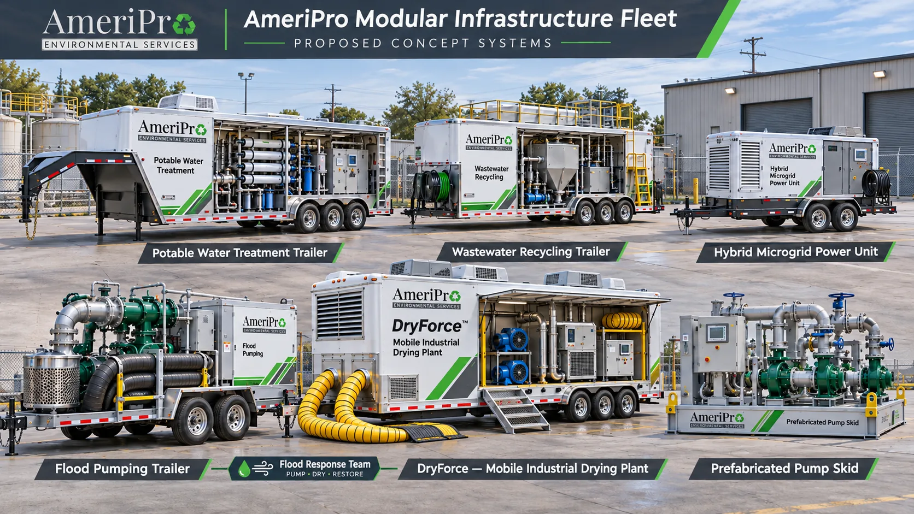

Redundant transfer
One pump delivers the full design flow while the second remains isolated or armed for automatic failover and runtime equalization.
A forklift- and crane-placeable duplex centrifugal pump skid for plant utility transfer, nonpotable washwater boosting and stationary facility tank-to-tank circulation.

Each pump branch includes suction and discharge isolation, flexible connectors, strainer/pressure taps and a discharge check valve so either pump can be isolated while the standby unit runs.
One pump delivers the full design flow while the second remains isolated or armed for automatic failover and runtime equalization.
The lag pump starts on high level or low header pressure. Combined flow depends on the shared piping system curve, not simple doubling.
Low suction pressure/level, high discharge pressure, minimum-flow timer and VFD overload trips protect mechanical seals and casings.
End-suction centrifugal pumps require screened, low-viscosity fluids free of stringy rags or coarse grit. Do not apply PPS-200 to unscreened raw restaurant grease trap pumpings, heavy sludge cakes or uncharacterized hazardous solvents.
Select ductile-iron / bronze-fitted, 316 stainless steel or duplex alloy wetted ends based on chloride level, pH, temperature and cleaning chemistry. Mechanical seal faces and elastomers (e.g., SiC/SiC with FKM or EPDM) must match the specific liquid and temperature envelope.
Evaluate total dynamic head, shaft brake horsepower, electrical kW demand and suction NPSH margin for a clean/screened liquid. All presets are illustrative starting cases.
Total dynamic head (TDH) = static head + friction loss. Equivalent differential pressure (psi) = TDH × SG × 0.4335. Water horsepower (WHP) per running pump = (GPM × TDH × SG) / 3,960. Brake horsepower (BHP) = WHP / (pump efficiency / 100). Electrical input per running pump (kW) = BHP × 0.7457 / (drive efficiency / 100).
Available net positive suction head (NPSHa) = absolute suction supply head − suction friction loss − fluid vapor pressure head. The planner checks whether BHP ≤ motor nameplate HP and whether NPSHa ≥ NPSHr + 3.0 ft.
The model uses clean-water affinity/power equations without viscosity correction factors (Hydraulic Institute ANSI/HI 9.6.7) and does not solve pump-curve vs. system-curve intersections automatically. Check end-of-curve runout power and starting inrush kVA with the pump manufacturer.
Proposed 8 ft 0 in length × 5 ft 0 in width × 6 ft 2 in height structural steel skid frame. Forklift pockets and corner lifting lugs require structural engineering certification.
Initial dry shipping mass allocation: 2,850 lb; wet operating mass with manifold liquid holdup: 3,250 lb against a 4,000 lb structural design target (leaving 750 lb reserve). Lifting lugs, forklift pocket spacing, center of gravity and anchor-bolt reactions require structural verification.
Equipment tags, manifold layout, mass and power schedules, protective interlocks and validation gates.
Read design notes →$62,000 base allowance + 20% contingency = $74,400 concept budget, pending supplier quotes.
Read BOM & exclusions →At 7.4 kW (single pump) to 14.3 kW (parallel), PPS-200 fits within building 480/230 V feeders or HybridForce-60 real-power targets once voltage and starting kVA are matched.
Review HybridForce-60 →Technical background: Hydraulic Institute (ANSI/HI) pump standards overview and EPA water reuse engineering references. These support general hydraulic principles.